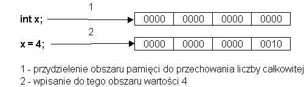
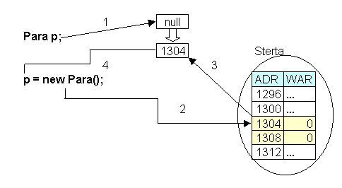

1. Obiekty i referencje
Za wyj±tkiem operacji na liczbach, programowanie w Javie - tak naprawdê -
polega na pos³ugiwaniu siê obiektami. Jak pamiêtamy z wyk³adu 4 obiekty s±
egzemplarzami klas.
Np. ³añcuchy znakowe (napisy) s± egzemplarzami klasy String, a klasa ta definiuje
wspólne w³a¶ciwo¶ci tego rodzaju obiektów (napisów). Klasa String jest jedn±
z wielu klas "standardowych", dostarczonych wraz ze ¶rodowiskiem Java 2 SDK,
ju¿ gotow± do wykorzystania przez programistê. Klasy mo¿emy definiowaæ sami
(za chwilê zobaczymy jak), mo¿emy tak¿e korzystaæ z klas, które przygotowali
jacy¶ inni programi¶ci (i które nie wchodz± w sk³ad klas "standardowych").
Przypomnijmy sobie równie¿, ¿e na obiektach operujemy wydaj±c im polecenia
(komunikaty do obiektów), a wydawanie poleceñ nazywane jest wywo³ywaniem
metod (odpowiednika pojêcia funkcji) na rzecz obiektów.
Wyobra¼my sobie teraz, ¿e kto¶ przygotowa³ dla nas klasê o nazwie Para i
¿e jej obiekty s± parami liczb ca³kowitych tzn. ka¿dy obiekt sk³ada siê z
dwóch elementów - liczb ca³kowitych (pierwszego sk³adnika pary i drugiego
sk³adnika pary).
To co mo¿emy robiæ z obiektami klasy Para okre¶lone jest przez zestaw metod
tej klasy (poleceñ, które mo¿na wydawaæ obiektom-parom liczb ca³kowitych).
Wyobra¼my sobie dalej, ¿e w klasie Para s± zdefiniowane nastêpuj±ce polecenia
(metody):
- o nazwie set - ustalaj±ca warto¶æ pary (obu sk³adników pary)
- i o nazwie show - pokazuj±ca parê (wyprowadzaj±ca na konsolê oba sk³adniki pary)
Ta informacja wystarczy nam teraz by pos³ugiwaæ siê obiektami klasy Para (jej budowê poznamy w nastêpnych wyk³adach).
Co trzeba zrobiæ, ¿eby ustaliæ warto¶æ pary i wyprowadziæ j± na konsolê?
Po pierwsze, musimy mieæ zmienn±, która bêdzie oznaczaæ obiekt- parê.
Po drugie, musimy utworzyæ obiekt-parê.
Po trzecie, temu obiektowi trzeba wydaæ polecenia set i show.
Mo¿e to wygl±daæ w nastêpuj±cy sposób:
public class ParaSetAndShow {
public static void main(String[] args) {
Para para1 = new Para(); // 1
para1.set( 1, 2 ); // 2
para1.show(); // 3
}
}
Wydruk dzia³ania programu:
( 1 , 2 )
Po kolei:
- w wierszu oznaczonym 1 deklarujemy zmienn± o nazwie para1 i tworzymy obiekt parê za pomoc± wyra¿enia new (jak widaæ wyra¿enie new sk³ada siê ze s³owa kluczowego new
i nastêpuj±cej po nim nazwie klasy obiektu oraz nawiasów okr±g³ych, w których
- jak siê mo¿na domysliæ - podawane mog± byæ - jako argumenty - informacje
niezbêdne do tworzenia obiektu. Tu nie podajemy takich informacji. Po nastêpnym
wyk³adzie bêdziemy dobrze rozumieæ dlaczego wyra¿enie new ma tak± formê);
- teraz mamy ju¿ (jeden) obiekt-parê i zmienn± (o nazwie para1) za pomoc± której bêdziemy na tym obiekcie operowaæ;
- w wierszu // 2 do obiektu oznaczanego przez zmienn± para1 posy³amy
polecenie set. Aby pos³aæ polecenie musimy wybraæ jakiego konkretnie obiektu
ma ono dotyczyæ. Temu wyborowi s³u¿y kropka (.), nazywana selektorem
. Gdy piszemy para1. - znaczy to, ¿e nastêpuj±ce po kropce polecenie ma byæ
wys³ane do obiektu oznaczanego przez zmienn± para1. Poleceniem tym jest
set. W nawiasach okr±g³ych podajemy jego argumenty (dodatkow± informacjê,
która ma byæ uwzglêdniona przy wykonaniu polecenia). W tym przypadku pierwszy
argument jest warto¶ci±, która ma byæ nadana pierwszemu sk³adnikowi pary,
a drugi - drugiemu. W sumie para1.set( 1, 2); znaczy: ustaliæ warto¶æ pierwszego
elementu obiektu (sk³adnika pary) oznaczanego przez zmienn± para1 na 1, a
drugiego elementu (sk³adnika pary) - na 2;
- w wierszu // 3 do obiektu, oznaczanego przez para1 posylamy komunikat
show ("poka¿ siê") i w rezultacie na konsolê wyprowadzana jest "warto¶æ pary",
w tym przypadku podana jako ( warto¶æ_pierwszego_skladnika , warto¶æ_drugiego_skladnika
) czyli ( 1 , 2 );
Nieco niepokoj±ce jest w tym opisie ciag³e u¿ywanie sformu³owania "obiektu
oznaczanego przez (zmienn±) para1". Czy¿ nie ³atwiej by³oby mowiæ: obiektu para1, tak
jak mówimy np liczby calkowitej x? I w ogóle czym jest, tak naprawdê, zmienna
para1?
Widzimy wyra¼nie, ¿e zosta³a ona zadeklarowana, ale jednocze¶nie pojawi³ siê nieco dziwny punkt o tworzeniu obiektu.
Co by siê sta³o gdyby¶my po prostu napisali:
Para para1;
para1.set( 1, 2 );
para1.show();
Jak ju¿ by³o powiedziane, deklaracje zmiennych, które oznaczaj± obiekty
zapisujemy w analogiczny sposób jak deklaracje zmiennych typów pierwotnych.
int x; // deklaracja zmiennej typu int
Para p; // deklaracja zmiennej p, za pomoc± której mo¿emy operowaæ na obiektach klasy Para
Pomiêdzy tymi deklaracjami wystêpuje jednak subtelna ró¿nica znaczeniowa.
Otó¿, deklaracja zmiennej x wydziela pamiêæ dla przechowywania liczby ca³kowitej
(cztery bajty). W tym momencie x jest synonimem jednostki danych - liczby
ca³kowitej.
Piszemy np. x = 4; i do miejsca pamiêci oznaczanego przez zmienn± x wpisywana jest liczba 4. Wygl±da to mniej wiêcej tak:

W innych jêzykach programowania (np. C++) mówi siê, ¿e jest to deklaracja wraz z definicj±
Zatem sama deklaracja zmiennej calkowitoliczbowej x tworzy "obiekt" - liczbê
ca³kowit± (przed ustaleniem warto¶ci zmiennej liczba ta ma jak±¶ domy¶ln±
warto¶æ, byæ mo¿e 0).
W przypadku deklaracji zmiennej, która mo¿e oznaczaæ obiekt jakiej¶ klasy
sytuacja jest zupe³nie inna. Deklaracja nie tworzy obiektu (nie wydziela
pamiêci do przechowywania obiektu klasy).
Sam obiekt musi byæ dopiero utworzony - za pomoc± wyra¿enia new.
Jego zastosowanie powoduje przydzielenie pamiêci dla obiektu w dynamicznej
(zmieniaj±cej siê w trakcie dzia³ania programu) czê¶ci pamiêci, zwanej stert±.
Wynikiem wyra¿enia new jest adres (lokalizacja) miejsca w pamiêci, przydzielonego
obiektowi. Ten adres mo¿emy przypisaæ zmiennej, za pomoc± której chcemy na
danym obiekcie operowaæ.
Np. deklaracja:
Para p;
nie tworzy obiektu klasy Para.
A je¶li nie ma obiektu, to nie mo¿emy pos³aæ do niego ¿adnego komunikatu
(wydaæ polecenia, wywo³aæ na jego rzecz metody). Zatem, w tym kontek¶cie,
p.set(...) i p.show() bêd± niepoprawnymi odwo³aniami.
Zatem zmienna p nie zawiera obiektu Para.
Mo¿e natomiast zawieraæ jego lokalizacjê (adres w pamiêci) - inaczej nazywan± referencj± do obiektu.
Referencja to warto¶æ, która oznacza lokalizacjê (adres) obiektu w pamiêci
Obiekt klasy Para mo¿emy utworzyæ u¿ywaj±c wyra¿enia new Para(), a przypisuj±c
warto¶æ tego wyra¿enia zmiennej p, uzyskujemy mo¿liwo¶æ operowania na tym obiekcie:
Para p;
p = new Para();
co wcze¶niej, w skrócie, zapisywali¶my stosuj±c inicjacjê przy deklaracji:
Para p = new Para();
Dok³adnego wyja¶nienia dostarcza poni¿szy ideowy schemat

W literaturze polskiej rozró¿nia siê czasem dwa pojêcia:
- odniesienie - to co tutaj nazywamy referencj± do obiektu, lokalizacj±, adresem obiektu.
- odno¶nik - zmienn±, której warto¶ci± jest odniesienie
Nota bene, w niniejszych wykladach bêdziemy pos³ugiwaæ siê czasem terminem "referencja" na
oznaczenie obu tych pojêæ.. Ró¿nice bêd± zawsze jasne z kontekstu.
gdzie:
- Przydzielenie pamiêci zmiennej p do przechowania referencji do obiektu.
Referencja jest nieustalona, ma warto¶æ null, co oznacza, ¿e nie odnosi siê
do ¿adnego obiektu.
- Opracowanie wyra¿enia new powoduje przydzielenie pamiêci dla obiektu
klasy Para na stercie pod jakim¶ wolnym adresem (tu symbolicznie 1304). Wielko¶æ
przydzielonego obszaru jest wystarczaj±ca, by zmie¶ciæ dwie liczby ca³kowite
(sk³adniki pary). W tym momencie oba skladniki pary równe s± 0.
- Warto¶ci± wyra¿enia new jest referencja (adres 1304). Jest ona umieszczana w uprzednio przydzielonym zmiennej p obszarze pamiêci
- Zmienna p ma teraz warto¶æ = referencji do obiektu klasy Para, któremu w kroku 2 przydzialono pamiêæ na stercie (adres 1304).
Zatem zmienna p w naszym przyk³adzie zawiera (w koñcu) referencjê do obiektu klasy Para. Powiemy te¿ "wskazuje na obiekt". Powiemy te¿ czasem w skrócie: jest referencj±.
I: "referencja wskazuje na obiekt".
Mówili¶my wcze¶niej: "zmienna p mo¿e oznaczaæ
obiekt klasy Para" w tym w³a¶nie sensie, i¿ mo¿e zawieraæ referencjê do obiektu
klasy Para (zatem jako¶ go "oznaczaæ", ale na pewno nie zawieraæ). A dlaczego
mo¿e? Bo nie zawsze zawiera referencjê do obiektu, czasami
(np. zaraz po deklaracji bez inicjacji) nie zawiera referencji do ¿adnego
obiektu (bo ¿aden nie zosta³ jeszcze utworzony).
Powstaje pytanie - jakiego typu jest zmienna p i wszystkie podobne zmienne, te o których mówili¶my, ¿e mog± oznaczaæ obiekty?
Otó¿ w Javie oprócz typów numerycznych i typu boolowskiego istnieje jeszcze tylko jeden typ - typ referencyjny.
Wszystkie zmienne deklarowane z nazw± klasy w miejscu nazwy typu s± zmiennymi
typu referencyjnego. Zmienne te mog± zawieraæ referencje do obiektów lub
nie zawieraæ ¿adnej referencji (nie wskazywaæ na ¿aden obiekt).
Warto¶æ zmiennej typu referencyjnego, która nie zawiera referencji do obiektu równa jest null. S³owo null jest s³owem kluczowym jêzyka
Zatem dopuszczalne warto¶ci zmiennych typu referencyjnego - to referencje
do obiektów lub warto¶æ null. Tak samo jak 1 jest litera³em typu int - null
jest litera³em typu referencyjnego.
Referencje s± bardzo podobne do wska¼ników w C, z t± istotn±
ró¿nic±, ¿e nie ma w Javie arytmetyki "na referencjach". Dziêki temu programowanie
w Javie jest bardziej odporne na b³êdy. Arytmetyka wska¼nikowa w C jest
czêst± przyczyn± b³êdów, gdy¿ pozwala siêgaæ do dowolnego miejsca w pamiêci
(np. poprzez zwiêkszanie wska¼nika, który wskazuje na obszar przydzielony
jakiej¶ zmiennej).
Dla warto¶ci typów referencyjnych (które to warto¶ci
w istocie s± liczbami, bo adresy obiektów s± liczbami) nie s± dopuszczalne
operacje arytmetyczne. Mo¿emy natomiast:
- porównywaæ referencje na równo¶æ (==) lub nierówno¶æ (!=),
- przypisywaæ im warto¶ci innych referencji oraz warto¶æ null
Musimy zawsze pamiêtaæ, ¿e operacje te (wykonywane na zmiennych, oznaczaj±cych
obiekty) dotycz± referencji, a nie obiektów (na obiektach, ich wnêtrzu operujemy
za pomoc± metod, poleceñ posy³anych do obiektów za po¶rednictwem referencji
i za pomoc± "operatora" kropka).
Wyobra¼my sobie, ¿e na dwóch "danych" - liczbach ca³kowitych i na dwóch "danych"
- obiektach klasy Para wykonujemy podobne operacje:
- Nadanie warto¶ci pierwszej danej, nadanie warto¶ci drugiej danej,
- Przypisanie zmiennej oznaczaj±cej drug± dan± warto¶ci zmienej oznaczaj±cej pierwsz± dan±,
- Zmianê warto¶ci drugiej danej,
- Porównanie zmiennych, oznaczaj±cych obie dane.
A dodatkowo (w obu przypadkach) wprowadzimy trzeci± dan±, której warto¶æ ustalimy na warto¶æ drugiej i porównamy zmienne oznaczaj±ce te dane (drug± i trzeci±).
Program móg³by wygl±daæ tak:
public class Roznica {
public static void main(String[] args) {
// Operacje na zmiennych typów pierwotnych
int x, y, z;
x = 3;
y = 4;
x = y;
y = 5;
z = 5;
System.out.println("x = " + x);
System.out.println("y = " + y);
System.out.println("z = " + z);
if (x == y) System.out.println ("x i y równe.");
else System.out.println ("x i y nierówne.");
if (y == z) System.out.println ("y i z równe.");
else System.out.println ("y i z nierówne.");
// Podobne operacje na zmiennych typu referencyjnego
Para px = new Para(), py = new Para(), pz = new Para();
px.set( 3, 3 );
py.set( 4, 4 );
pz.set( 5, 5 );
px = py;
py.set( 5, 5 );
System.out.print("Para px: "); px.show();
System.out.print("Para py: "); py.show();
System.out.print("Para pz: "); pz.show();
if (px == py) System.out.println ("px i py równe.");
else System.out.println ("px i py nierówne.");
if (py == pz) System.out.println ("py i pz równe.");
else System.out.println ("py i pz nierówne.");
}
}
x = 4
y = 5
z = 5
x i y nierówne.
y i z równe.
Para px: ( 5 , 5 )
Para py: ( 5 , 5 )
Para pz: ( 5 , 5 )
px i py równe.
py i pz nierówne.
Wynik dzia³ania programu (obok) mo¿e wygl±daæ zaskakuj±co dla kogo¶, kto nie u¶wiadomi sobie braku
ró¿nicy pomiêdzy operacjami na zmiennych typów pierwotnych i referencyjnych
(my¶l±c ¿e zmienne typów referencyjnych zawieraj± obiekty). Otrzymany rezultat
wynika z nastêpuj±cych faktów:
- wyra¿enie new Para() zwraca referencjê do nowoutworzonego obiektu klasy
Para; uzyskiwane referencje przypisywane s± zmiennym typu Para (który jest
typem referencyjnym)
- u¿ycie metody (polecenia) set ustala warto¶ci danych w obiekcie klasy
Para; do obiektu odwo³ujemy siê przez referencjê, która na niego wskazuje
(np. px.set(...)
- przypisanie px = py powoduje skopiowanie referencji (wskazuj±cej na obiekt-parê o sk³adnikach (4, 4)) do zmiennej
px (dot±d wskazuj±cej na obiekt-parê o warto¶ciach (3,3). Od tej chwili
px i py oznaczaj± ten sam obiekt (który jest par± o warto¶ciach (4,4)). Do
obiektu-pary (3,3) nie mamy ju¿ w tej chwili ¿adnego dostêpu.
- poniewa¿
za pomoc± referencji py ustalamy nowe warto¶ci sk³adników pary (py.set(5,5)),
na któr± wskazuje zarówna zmnenna py jak i px, to odwolania show wobec tych
zmiennych poka¿± identyczne warto¶ci (skladniki pary o warto¶ciach 5, 5)
-
dalej porównanie referencji px i py da warto¶æ true (bo referencje wskazuj±
na ten sam obiekt, a nie dlatego, ¿e wskazuj± na dwa obiekty o tych samych
warto¶ciach elementów - sk³adników pary)
- o czym dobitnie siê przekonujemy porównuj±c zmienne py i pz. Zmienne te
wskazuj± na dwa ró¿ne obiekty (zatem warto¶ci tych zmiennych s± ró¿ne) i
dlatego wynik porównania jest false, mimo, ¿e warto¶ci elementów obu tych obiektów (sk³adniki pary) s± takie same (5, 5).
Przy okazji warto zastanowiæ siê, co dzieje siê obiektem-par± o warto¶ciach
(3,3) na któr± wskazywa³a najpierw referencja px. Obiekt ten zosta³ utworzony
na stercie (px = new Para()), a wiêc zajmuje jaki¶ obszar pamiêci. Nastêpnie
ustalono warto¶ci jego elementów (sk³adników pary) - px.set(3,3) - a wiêc
te warto¶ci zosta³y wpisane do tego obszaru. Po czym zmiennej px przypisano
warto¶æ zmiennej py i w ten sposób w programie nie mamy ju¿ ¿adnej referencji
do tego obiektu. A poniewa¿ na obiektach mo¿emy dzialaæ tylko za pomoc± referencji,
to jest on ju¿ dla nas bezu¿yteczny i wy³±cznie "za¶mieca pamiêæ". Czy musimy
siê tym martwiæ? Gdyby np. takich za¶miecaj±cych pamiêæ obiektów pojawi³o
siê w naszym programie tysi±ce, to czy nie spowodowo³oby to przepe³nienia
pamiêci?
Jest to istotne u³atwienie w porównaniu z takimi jêzykami jak C czy
C++, gdzie dynamicznie alokowane przez programistê (za pomoc± operatorów
lub funkcji) obszary pamiêci musz± byæ przez programistê ¶wiadomie zwalniane
Na szczê¶cie - nie. Bezu¿yteczne obiekty s± automatycznie usuwane z pamiêci
(bez konieczno¶ci ¿adnej ingerencji programisty), mimo, ¿e powsta³y one na
skutek wykonania odpowiednich instrukcji zapisanych przez programistê w programie
(np. Para py = new Para();).
Obiekty, na które w programie nie wskazuje ju¿ ¿adna referencja s± automatycznie usuwane z pamiêci. Nazywa siê to automatycznym od¶miecaniem (garbage collecting)
Podsumujmy najwa¿niejsze fakty.
- obiekty musimy tworzyæ za pomoc± wyra¿enia new ...
- na obiektach operujemy za pomoc± referencji (które na nie wskazuj±) i poleceñ (metod) zdefiniowanych w klasie obiektów
- referencje nie s± obiektami - s± adresami obiektów
- zmienne typów referencyjnych musimy (tak samo jak zmienne innych typów) deklarowaæ przed ich u¿yciem w programie
- deklaracja zmiennej-referencji nie tworzy obiektu
Programuj±c w Javie, w wielu przypadkach, mo¿na nawet nie zdawaæ sobie z
tego wszystkiego sprawy. Mo¿na pokazaæ wiele programów obiektowych w Javie,
które dzia³aj± poprawnie i wykonuj± przewidziane dla nich zadania, a zosta³y
napisane bez u¶wiadomienia sobie ró¿nicy pomiêdzy referencjami i obiektami.
Dobrym przyk³adem s± aplikacje powitalne z poprzedniego wyk³adu: mo¿na je
napisaæ nic nie wiedz±c o referencjach i my¶l±c (b³êdnie), ¿e zmienne zadeklarowane
tam jako Frame czy Label zawieraj± obiekty.
Jednak w wielu nawet prostych przypadkach (np. poprzedni program porównuj±cy
dzia³ania na liczbach i na obiektach-parach) brak wiedzy o referencjach mo¿e
doprowadziæ do powa¿nych b³êdów w programie. Na pewno za¶ do napisania nieco
bardziej skomplikowanych programów u¶wiadomienie sobie ró¿nicy pomiêdzy obiektami
i referencjami jest bardzo istotne. Dlatego po¶wiêcili¶my tej kluczowej sprawie
sporo miejsca ju¿ na pocz±tku: by³oby chyba niedobrze zaczynaæ od prostszej,
mo¿e bardziej zrozumia³ej (nie wspominaj±cej o referencjach), ale z gruntu
fa³szywej interpretacji jêzyka, aby potem - ze zdziwieniem - musieæ przestawiaæ
swoje my¶lenie na ca³kiem inne tory.
Dlatego - mimo, ¿e podany tu materia³ mo¿e wydaæ siê nieco skomplikowany
- warto mu po¶wiêciæ i czas i wysi³ek. Nie odk³adaj±c tego na po¼niej.
Powiedzmy te¿ szczerze, ¿e model przyjêty przez twórców Javy, jest trudny
w opisie. Precyzyjne opisy dzia³ania programu (¶ci¶le zgodne z modelem) musz±
roiæ siê od s³abo czytelnych zbitek.
Na przyk³ad, opis jednej prostej instrukcji:
Color x = y.getBackground();
powinien wygl±dac tak:
"zmiennej x przypisujemy referencjê do obiektu klasy Color zwrócon± przez
metodê getBackground(), wywo³an± na rzecz obiektu, do którego referencjê
zawiera zmienna y".
Sytuacji w niczym nie poprawia u¿ycie terminologii odno¶nik i odniesienie:
"odno¶nikowi x przypisujemy odniesienie do obiektu klasy Color, zwrócone
przez metodê getBackground(), wywo³an± na rzecz obiektu, do którego odniesienie
zawiera odno¶nik y".
Dlatego w dalszej czê¶ci wyk³adów bêdziemy siê starali u¿ywaæ uproszczonego jêzyka, stosuj±c swoiste skróty my¶lowe.
Zawsze pamiêtaj±c o ró¿nicy miêdzy referencj±, zmienn± zawieraj±c± referencjê
oraz obiektem bêdziemy czasem (dla uproszczenia opisów) mówiæ:
- referencja - nazywaj±c tak zarówno adres obiektu, jak i zmienn± go zawieraj±c±
- obiekt - maj±c na my¶li referencjê do obiektu
Na przyk³ad w kontek¶cie:
JakasKlasa x;
...
powiemy czasem "referencja x" (gdy bêdziemy chcieli uwypukliæ "wska¼nikowy" charakter zmiennej x)
a czasem: "obiekt x" (gdy bêdziemy chcieli podkre¶liæ operowanie na obiekcie, wskazywanym przez referencjê zawart± w x)
W kontek¶cie :
String txt;
...
powiemy czasem: "³añcuch znakowy txt".
a w kontek¶cie:
Frame v;
...
powiemy czasem "okno v ..." .
Albo w kontek¶cie:
Color x = y.getBackground();
powiemy czasem: "uzyskanie koloru t³a obiektu y"
Nale¿y pamiêtaæ, ¿e bêd± to wszystko skróty my¶lowe, s³u¿±ce do bardziej
klarownego przedstawienia tre¶ci, istoty, wysokopoziomowej semantyki programów.
I - mimo tych skrótów - zawsze nale¿y pamiêtaæ o ró¿nicy pomiêdzy referencjami i obiektami.
|